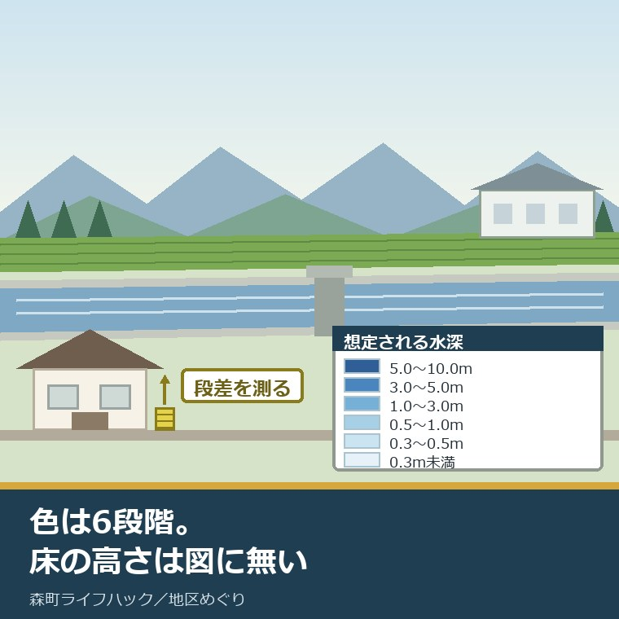
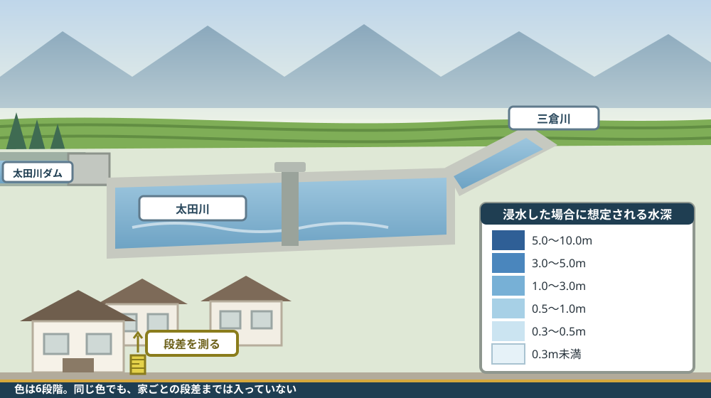
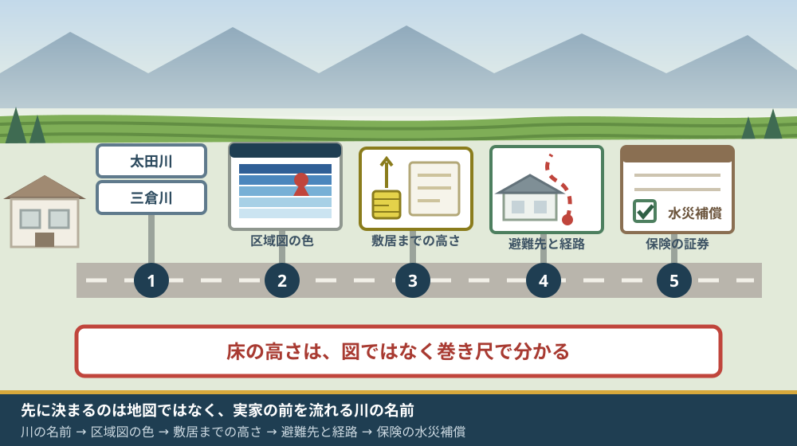

森町のハザードマップ｜太田川の想定最大規模で実家の床の高さを見る

この記事の要点
Q. 太田川沿いにある森町の実家を、いずれ引き継ぐことになります。水害のリスクは、どこを見れば分かりますか。
A. 静岡県は2025年3月31日、太田川など森町に関わる8河川を水防法第14条第2項で指定しました。ただし2026年8月21日時点で区域図が公開されているのは太田川と小薮川の2河川だけです。太田川の図は浸水深を0.3m未満から5.0〜10.0mまでの6段階で示しますが、100m間隔の計算で、堤防の破堤は考慮されていません。実家の床の高さは、図では分かりません。
静岡県周智郡森町（遠州森町）の実家が、太田川の近くにある。いずれ自分が引き継ぐことになる。この記事は、そういう立場の方に向けて書いています。
水害の話は、帰省したときに出てきます。「うちは大丈夫なのか」と聞いても、親は「今まで来たことがない」と答えます。それは事実ですが、答えにはなっていません。
2025年に入って、この問いに使える材料が一つ増えました。静岡県が太田川の想定最大規模の浸水想定区域図を指定・公表したことです。ただし、使えるようになった範囲は限られています。
今日は2026年8月21日。指定から1年5か月が経っています。先に書いておくと、森町に関わる8河川のうち、図が見られるのは2河川だけです。
順に、公表されている内容から並べます。数字を並べたあとで、その図から読めることと読めないことを分けます。
公式情報から確定できること
2026年8月21日時点で、静岡県公式サイトと森町公式サイト、および公開されているPDFから確認できたことを並べます。出典は記事の末尾に載せています。
一つ目。指定日は2025年3月31日です。静岡県公式の「太田川＿洪水浸水想定区域図」のページによれば、河川名は太田川水系太田川、水防法に基づく指定年月日は令和7年3月31日、告示番号は静岡県告示第255号の16です。
二つ目。根拠となる条文が図面に明記されています。公開されている区域図PDFによれば、指定の根拠法令は水防法（昭和24年法律第193号）第14条第2項です。
三つ目。作成主体は静岡県です。同PDFによれば、作成主体は静岡県、閲覧場所は静岡県土木防災課、袋井土木事務所です。問い合わせ先は交通基盤部河川砂防局土木防災課（電話054-221-3033）です。
四つ目。この図は「想定最大規模」の図です。同PDFは「想定し得る最大規模の降雨による洪水浸水想定区域、浸水した場合に想定される水深を表示した図面です」としています。
五つ目。公開されているPDFは2枚組です。静岡県公式の同ページには「太田川＿洪水浸水想定区域図（想定最大規模）1」（PDF 718.2KB）と「太田川＿洪水浸水想定区域図（想定最大規模）2」（PDF 3.7MB）が掲載されています。
六つ目。2枚は対象範囲が違います。1枚目は太田川水系太田川、原野谷川及び敷地川を対象とし、関係市町村は磐田市、袋井市、掛川市、森町です。2枚目は太田川水系太田川のみを対象とし、関係市町は周智郡森町だけです。
七つ目。森町の読者に効くのは2枚目です。2枚目のPDFによれば、実施区間は左岸・右岸とも「太田川ダムから森町城下三倉川合流点まで」です。町の中を流れる区間が、この1枚に入っています。
八つ目。前提となる雨の書き方が、2枚で違います。1枚目は「太田川流域の24時間の総雨量629.5mm」、2枚目は「太田川流域の降雨強度127.0mm/h」です。同じ「想定最大規模」でも、示されている数値の単位が異なります。
九つ目。浸水深は6段階で色分けされています。2枚目の凡例によれば、区分は0.3m未満／0.3〜0.5m／0.5〜1.0m／1.0〜3.0m／3.0〜5.0m／5.0〜10.0mです。
十番目。縮尺が明記されています。同PDFによれば、A1版出力時は1対7,500、A3版出力時は1対15,000です。家1軒を判別する縮尺ではありません。
十一番目。破堤は考慮されていません。同PDFの計算条件は「堤防の破堤は考慮しておりません」と明記しています。この図は、越水または溢水した場合の氾濫が推定される範囲を示したものです。
十二番目。計算の粒度も書かれています。同PDFによれば、「河道とその周辺を一体として100mごとに浸水位を計算し、5mメッシュの平均地盤高との差をとることで浸水深を算出しており、微地形による影響が反映できない場合があります」とされています。
十三番目。地形データの限界も書かれています。同PDFは「河道の形状は、航空レーザ測量データを使用して作成しており、水面下等一部の地形を適切に評価できない場合がある」としています。
十四番目。作成の手引きが示されています。2枚目のPDFによれば、この図は「小規模河川の氾濫推定図作成の手引き」（令和5年7月）等に基づき作成されています。
十五番目。考慮していない氾濫が三つ挙げられています。同PDFは「対象河川以外の（決壊による）氾濫、シミュレーションの前提となる降雨を越える規模の降雨による氾濫、高潮及び内水による氾濫等を考慮していません」としています。
十六番目。下流側は先に指定されていました。1枚目のPDFの注記によれば、「太田川水系原野谷川及び敷地川は、H29.7.7に指定済み」で、図中にはH30.5.29指定の範囲とR7.3.31指定の範囲が並記されています。
十七番目。森町に関わる河川は8本あります。静岡県公式の「洪水浸水想定区域図（洪水予報河川、水位周知河川以外）／森町」のページには、小薮川、太田川、三倉川、瀬入川、伏間川、葛布川、大府川、一宮川の8河川が並んでいます。
十八番目。8河川はすべて同じ日に指定されています。各河川のページによれば、いずれも指定年月日は令和7年3月31日、告示番号は静岡県告示第255号の16です。
十九番目。ただし、図が見られるのは2河川だけです。2026年8月21日に各ページを確認したところ、PDFが掲載されているのは太田川（2ファイル）と小薮川（1ファイル、PDF 1.0MB）で、三倉川、瀬入川、伏間川、葛布川、大府川、一宮川の6河川は「（※更新中）」と表示されています。
二十番目。この8河川は、洪水予報河川でも水位周知河川でもありません。掲載されている階層の名称が「洪水浸水想定区域図（洪水予報河川、水位周知河川以外）」です。静岡県は、この区分の447河川について想定最大規模の区域図を作成・公表しているとしています。
二十一番目。森町は町として別のハザードマップを出しています。森町公式の「森町防災ハザードマップ」によれば、掲載されているPDFは森町全図（3.1MB）、三倉地区（3.7MB）、天方地区（3.8MB）、森地区（3.9MB）、一宮地区（3.1MB）、園田地区（3.0MB）、飯田地区（3.3MB）の7枚です。
二十二番目。町のマップが扱うのは土砂災害と河川氾濫です。同ページは「土砂災害危険個所や河川氾濫区域」を地図上に示し、避難所等の位置を表示するとしています。担当は危機管理課危機管理係（電話0538-85-6302）、ページ更新日は2025年4月1日です。
二十三番目。避難先の数も公表されています。森町公式の「町指定避難所等について」によれば、指定避難所は15施設、救護所は3施設、防災ヘリポートは6施設、災害時における町指定緊急物資集積場所は1施設です。ページ更新日は2024年8月10日です。
二十四番目。売買のときに説明される項目にもなっています。国土交通省の報道発表資料によれば、2020年7月17日公布・2020年8月28日施行の宅地建物取引業法施行規則の改正で、「水防法の規定に基づき作成された水害ハザードマップにおける対象物件の所在地」が重要事項説明の対象に加えられました。対象とする水害は洪水・雨水出水・高潮です。

この絵で描きたかったのは、図の色と、家の足元の高さが別の話だという点です。区域図は100m間隔で計算した浸水位を、5mメッシュの平均地盤高と引き算して作られています。玄関の一段や、盛土した20cmは、その計算に入っていません。
森町の実家に置き換えると、この図から何が読めて何が読めないか
ここからは、確認した事実を実際の場面に置き換えて考えます。ここからは私の見方が混じります。
正直に書きます。ハザードマップの色を見て安心する読み方が、いちばん危ない。色が付いていない場所は「この計算では浸水しない」というだけで、水が来ないという意味ではありません。図の注記自体が、そう書いています。
読めることから並べます。一つ目は、実家がどの色の帯に入っているかです。0.5〜1.0mなのか、1.0〜3.0mなのか。この二つの間には、暮らしの上で大きな差があります。
二つ目は、色の境目がどこを通っているかです。道の向こう側は色が薄い、川側の一列だけ濃い、といった形が見えます。境目の位置は、避難のときにどちらへ動くかの材料になります。
三つ目は、避難所が色の中にあるかどうかです。町指定避難所は15施設。そのうち何か所が浸水想定の色に入っているかは、地図を重ねれば分かります。
読めないことも三つあります。一つ目は、実家の床が浸かるかどうかです。浸水深は地盤高からの高さで、床の高さからの数字ではありません。基礎が高い家と低い家の差は、この図には出てきません。
二つ目は、破堤したときにどうなるかです。図は越水・溢水の推定であり、堤防が切れた場合の想定ではありません。破堤を含めた図は、この公表資料には含まれていません。
三つ目は、太田川以外の川がどうなるかです。実家の前を流れているのが三倉川や葛布川なら、区域図はまだ公開されていません。指定は済んでいるのに、図が見られない状態が2026年8月21日時点で続いています。
数字を家の側に翻訳します。浸水深0.3〜0.5mは、多くの家で玄関の上がり框に届く高さです。0.5〜1.0mになると、1階の畳とコンセントが水に入ります。これは図に書かれていることではなく、私が現場で見てきた高さの目安です。
良い点：この公表の、よくできているところ
ここからは、公表されている内容を読んで私が良いと感じた点を書きます。事実ではなく評価です。
一つ目。前提と限界が図面の中に書かれている点です。降雨の前提、破堤を考慮していないこと、100m間隔の計算であること、微地形が反映されないこと。この4つが同じ紙に印刷されているのは、誠実な作りです。
二つ目。実施区間が地名で示されている点です。「太田川ダムから森町城下三倉川合流点まで」と書かれているので、自分の家がその区間の中か外かを地図で追えます。「太田川流域」で止めていません。
三つ目。浸水深を6段階に分けた点です。3段階だと1.0m以上がひとまとめになり、2階へ上がれば足りるのかどうかが分かりません。3.0〜5.0mと5.0〜10.0mが分かれているのは、避難の判断が変わる区切りです。
四つ目。縮尺を明記している点です。A1版で1対7,500と書かれているので、この図で家1軒を特定してはいけないと読み手が理解できます。精度の限界を、数字で示しています。
五つ目。指定年月日と告示番号が河川ごとに並んでいる点です。令和7年3月31日、静岡県告示第255号の16。あとから「いつ決まったのか」を追えます。
六つ目。森町が地区別にPDFを分けている点です。全図1枚だけだと、山あいの集落は小さくて読めません。三倉・天方・森・一宮・園田・飯田の6地区に分けてあるので、印刷して持ち歩けます。
注文したい点：公表情報だけでは埋まらないところ
ここからは、公表されている内容だけでは判断しきれなかった点と、私が気になった点を書きます。一事業者としての注文です。
一つ目。6河川が「更新中」のまま止まっている点です。指定は8河川すべて令和7年3月31日に済んでいます。指定された区域の効力と、住民が図を見られる状態との間に、1年5か月の開きがあります。いつ公開されるのかは、公表資料からは読み取れませんでした。
二つ目。2枚のPDFで前提の書き方が違う点です。1枚目は24時間総雨量629.5mm、2枚目は降雨強度127.0mm/h。同じ「想定最大規模」でありながら、どちらがどれだけ厳しい前提なのかを、この2枚だけで比べることができませんでした。
三つ目。町のハザードマップが、県のこの指定を反映しているかどうかが読み取れません。森町公式の「森町防災ハザードマップ」のページ更新日は2025年4月1日で、県の指定の翌日です。更新の中身が指定の反映なのかどうかは、ページの記載からは確認できませんでした。
四つ目。破堤を考慮した図が無い点です。越水・溢水だけを見た図は、川沿いの家にとっては「よくある側」の想定です。いちばん怖い側の想定が、公表資料の中に見当たりません。
五つ目。この8河川には水位の周知がありません。「洪水予報河川、水位周知河川以外」という区分に置かれています。図はできたが、雨の夜に今どうなっているかを知る手立ては、別に用意する必要があります。
六つ目。ここは家族側への注文です。「うちは色が付いていなかった」で終わらせないでください。その色は、破堤も、内水も、想定を超える雨も入っていません。図を見た日に、玄関の段差を測ってください。

対案・結論：今日、実家の水害リスクについて確かめられること
結論を急がないと決めたうえで、今日から動ける順番を書きます。順番はイラストのとおりです。
| 順番 | 確かめること | 確認先 |
|---|---|---|
| 1 | 実家の前を流れている川の名前 | 親への電話、または地形図。太田川本川か、三倉川・葛布川などの支流かで見る資料が変わる |
| 2 | その川の浸水想定区域図があるか | 静岡県公式「洪水浸水想定区域図（洪水予報河川、水位周知河川以外）／森町」の8河川の一覧 |
| 3 | 実家がどの色の帯に入るか | 太田川なら区域図2枚目（想定最大規模）。あわせて森町防災ハザードマップの該当地区PDF |
| 4 | 地盤面から玄関の敷居までの高さ | 現地で巻き尺。図では分からない部分。写真も撮って残す |
| 5 | 避難先と、そこまでの経路が水に浸かるか | 森町 危機管理課危機管理係 0538-85-6302（指定避難所15施設） |
| 6 | 火災保険に水災補償が付いているか | 証券または保険会社。付いていないことは珍しくない |
1と2は、家にいながら終わります。川の名前が分かれば、見るべき資料は自動的に決まります。支流だった場合、この時点で「図はまだ無い」という結論が出ます。
3は地図の作業です。区域図と町のハザードマップを両方見てください。県の図は河川ごと、町の図は地区ごとで、載っている情報が違います。
4は現地でしかできません。帰省したときに巻き尺を1本持って行ってください。道路面から玄関の敷居まで何センチか。この数字は、どの資料にも書かれていません。
5は電話で聞けます。避難所そのものより、そこへ行く道が浸かるかどうかのほうが効きます。夜に歩けない道なら、その避難所は選択肢から外れます。
6は保険証券を見るだけです。水災補償を外している契約は、実際にあります。川沿いの家で外れていたら、掛け直しの検討材料になります。
川沿いという立地そのものをどう評価するかは、別の話です。実家の立地を暮らしの動線から確かめる手順は実家の立地を、地図ではなく暮らしの動線から確認する記事にまとめました。
太田川の河川敷は、ふだんは町の資産でもあります。同じ川を、夏の夜には別の顔で見ることになります。その景色の側は森町の花火と川沿いの場所取りを扱った記事に書きました。
家族に残す記録
ここからは、確認した内容を紙1枚に残すための項目です。次に同じことを調べ直さないためのものです。
書き留めるのは、実家の前を流れる川の名前、その川の区域図の有無、実家が入る浸水深の区分、地盤面から玄関の敷居までの高さ、床の高さです。この5つで、家族の間で同じ絵を見られます。
あわせて、避難先の施設名とそこまでの経路、経路の途中で低くなる場所、火災保険の証券番号と水災補償の有無、危機管理課危機管理係の電話番号（0538-85-6302）、静岡県土木防災課の電話番号（054-221-3033）を並べておきます。
実家の名義、境界、農地、道路まで含めて順に整理したい方は、ふじがおか実家カルテの森町相談窓口もご利用ください。住所が分かれば、建物と敷地のどちらについても、確認する順番を整理できます。
大石の視点
ここからは、私（大石浩之）の個人の考えです。公的な事実とは分けてお読みください。この件について、私自身が森町の窓口で聞き取った体験があるわけではありません。以下は公表資料を読んだうえでの私の見方です。
私は宅地建物取引士として、水害ハザードマップの説明を実務で行っています。2020年8月28日から、対象物件の所在地を図の上で示すことが義務になりました。だから、この図は私にとって商売の道具でもあります。
使っていて毎回思うのは、色を見せた瞬間に話が終わってしまうということです。色が濃ければ「やめておく」、薄ければ「大丈夫だ」。そのどちらの反応も、図の作り方からすると早すぎます。
私が現地で先に見るのは、色ではなく高さです。道路面から玄関の敷居まで何センチ上がっているか。基礎の立ち上がりは何センチか。裏の水路と敷地はどちらが低いか。この3つを測ると、同じ色の中でも家ごとに答えが変わります。
制度としては筋が通っています。ただ、相談に来る方が最初に聞くのは「それで、うちは何センチ上がっているのか」です。この問いに、県の図も町の図も答えていません。答えは巻き尺の側にあります。
費用の話もします。火災保険の水災補償を外している契約は、実際にあります。掛け金を下げるために外したまま何年も経っている家がある。図を見た日に証券を出す。この2つは同じ日にやったほうがいい。
ここは正直に書きます。破堤を考慮していない図を、家族にどう説明すべきか、私はまだ答えを持っていません。「これは最悪ではない」と伝えると、いたずらに不安を煽ることになる。伝えないと、図を過信させることになる。今のところ私は、注記をそのまま読み上げて、判断は本人に渡しています。
それでも一つ言い切ります。床の高さは、図ではなく巻き尺で測ってください。県の図は100m間隔、町の図は地区単位。どちらも1軒の高さを見る道具ではありません。
不動産の実務から見ると、川沿いの家は「売れない家」ではありません。高さがあり、経路が確保でき、保険が掛かっていれば、買い手はいます。逆に、何も測らないまま「川沿いだから」と値を下げる相談のほうが、私は惜しいと感じます。
森町の側から見ると、この8河川の図は町の落ち度ではありません。作成主体は静岡県です。その上で、一事業者としては、6河川の公開時期の見通しだけでも示してほしいと望みます。指定は済んでいるのに図が無い、という状態がいちばん説明しにくい。
お盆に帰省したときの歩き方は、この確認と相性がいい。親と一緒に川まで歩けば、経路の低い場所は自然に目に入ります。その歩き方はお盆の3日間で実家の周りを歩いて確かめる記事に書きました。あわせて、車をやめた親の移動の値段が変わった話は森町のバス運賃が17年ぶりに改定された記事にまとめています。
結論が保留のままでも、確認済みの事実が一つ増えたなら、それは前進です。川の名前が分かった。段差を測った。どちらも、次の判断を軽くします。
まとめ
- 静岡県公式によれば、太田川水系太田川の洪水浸水想定区域図は令和7年3月31日に指定され、告示番号は静岡県告示第255号の16（2026年8月21日確認）
- 指定の根拠法令は水防法（昭和24年法律第193号）第14条第2項で、作成主体は静岡県、閲覧場所は静岡県土木防災課と袋井土木事務所
- 公開されているPDFは2枚組で、1枚目は太田川・原野谷川・敷地川（磐田市、袋井市、掛川市、森町）、2枚目は太田川のみ（周智郡森町）を対象とする
- 2枚目の実施区間は左岸・右岸とも「太田川ダムから森町城下三倉川合流点まで」
- 前提となる降雨は、1枚目が太田川流域の24時間の総雨量629.5mm、2枚目が太田川流域の降雨強度127.0mm/h
- 浸水深の区分は0.3m未満／0.3〜0.5m／0.5〜1.0m／1.0〜3.0m／3.0〜5.0m／5.0〜10.0mの6段階
- 縮尺はA1版出力時が1対7,500、A3版出力時が1対15,000
- 図は「堤防の破堤は考慮しておりません」と明記し、河道周辺を100mごとに浸水位を計算して5mメッシュの平均地盤高との差で浸水深を出しているため、微地形は反映されない
- 対象河川以外の決壊による氾濫、前提を超える降雨による氾濫、高潮および内水による氾濫は考慮されていない
- 1枚目の注記によれば、太田川水系原野谷川及び敷地川はH29.7.7に指定済みで、図中にはH30.5.29指定とR7.3.31指定の範囲が並記されている
- 森町に関わる河川は小薮川・太田川・三倉川・瀬入川・伏間川・葛布川・大府川・一宮川の8本で、すべて令和7年3月31日の同じ告示で指定されている
- 2026年8月21日時点で区域図PDFが公開されているのは太田川（2ファイル）と小薮川（1ファイル）で、残る6河川は「（※更新中）」と表示されている
- この8河川は「洪水予報河川、水位周知河川以外」の区分に置かれ、静岡県はこの区分の447河川について想定最大規模の区域図を作成・公表している
- 森町公式の森町防災ハザードマップは全図と三倉・天方・森・一宮・園田・飯田の6地区に分かれた計7枚のPDFで、土砂災害危険個所や河川氾濫区域を示す（更新日2025年4月1日、危機管理課危機管理係 0538-85-6302）
- 森町公式によれば、町指定避難所は15施設、救護所は3施設、防災ヘリポートは6施設、災害時における町指定緊急物資集積場所は1施設
- 国土交通省によれば、2020年7月17日公布・2020年8月28日施行の宅地建物取引業法施行規則の改正で、水害ハザードマップにおける対象物件の所在地が重要事項説明の対象になった（洪水・雨水出水・高潮）
よくある質問
Q1. 森町のハザードマップで、太田川の浸水想定はどこまで見られますか。
A1. 静岡県公式によれば、太田川水系太田川の洪水浸水想定区域図（想定最大規模）は2枚のPDFで公開されています。2枚目は太田川ダムから森町城下の三倉川合流点までを扱い、浸水深を0.3m未満、0.3〜0.5m、0.5〜1.0m、1.0〜3.0m、3.0〜5.0m、5.0〜10.0mの6段階で色分けしています。縮尺はA1版で1対7,500です。
Q2. 想定最大規模とは、どれくらいの雨のことですか。
A2. 太田川の区域図に書かれた前提は2種類あります。1枚目は太田川流域の24時間の総雨量629.5mm、2枚目は太田川流域の降雨強度127.0mm/hです。いずれも想定し得る最大規模の降雨として設定された数値で、実際に降った記録ではありません。図はこの前提を超える雨や、高潮・内水による氾濫を考慮していません。
Q3. 森町の実家を売るとき、ハザードマップの説明はありますか。
A3. 国土交通省によれば、2020年7月17日公布・2020年8月28日施行の宅地建物取引業法施行規則の改正で、水防法に基づく水害ハザードマップにおける対象物件の所在地が重要事項説明の対象に加わりました。市町村が配布する印刷物またはホームページ掲載のものの最新版を用いて、物件のおおむねの位置を示す運用が示されています。
最後に一つだけ。ここに書いた指定日、告示番号、降雨の前提、浸水深の区分、公開状況は、いずれも2026年8月21日時点で公表されている内容です。三倉川・瀬入川・伏間川・葛布川・大府川・一宮川の6河川の区域図がいつ公開されるか、森町防災ハザードマップが県の令和7年3月31日指定を反映しているかどうか、1枚目と2枚目の降雨前提の厳しさをどう比べるかは、公表資料からは確認できていません。特定の地番が浸水想定区域に入るかどうかの判断は行政の所管です。動く前に、必ず静岡県交通基盤部河川砂防局土木防災課（054-221-3033）および森町の危機管理課危機管理係（0538-85-6302）へご確認ください。
参考にした公式情報
- 太田川＿洪水浸水想定区域図／静岡県（河川名が「太田川水系太田川」であること、水防法に基づく指定年月日が令和7年3月31日、告示番号が静岡県告示第255号の16であること、「太田川＿洪水浸水想定区域図（想定最大規模）1」（PDF 718.2KB）と「太田川＿洪水浸水想定区域図（想定最大規模）2」（PDF 3.7MB）が掲載されていること、閲覧場所が静岡県土木防災課・袋井土木事務所であること、関係市町が森町であること、問い合わせ先が交通基盤部河川砂防局土木防災課（電話054-221-3033）であることを2026年8月21日に確認）
- 太田川水系太田川 洪水浸水想定区域図（想定最大規模）1／静岡県（「この図は、太田川水系太田川、原野谷川及び敷地川について、想定し得る最大規模の降雨による洪水浸水想定区域、浸水した場合に想定される水深を表示した図面です。」とされていること、「対象河川以外の（決壊による）氾濫、シミュレーションの前提となる降雨を超える規模の降雨による氾濫、高潮及び内水による氾濫等を考慮していません」とされていること、作成主体が静岡県、指定年月日が令和7年3月31日、告示番号が静岡県告示第255号の16、指定の根拠法令が水防法（昭和24年法律第193号）第14条第2項であること、実施区間が左岸・右岸とも「森町三倉の大河内砂防堰堤から森町城下三倉川合流点まで」とされていること、「※太田川水系原野谷川及び敷地川は、H29.7.7に指定済み」と注記されていること、公表の前提となる降雨が「太田川流域の24時間の総雨量629.5mm」であること、関係市町村が磐田市・袋井市・掛川市・森町であること、図中にH30.5.29指定とR7.3.31指定の範囲が並記されていることを2026年8月21日に確認）
- 太田川水系太田川 洪水浸水想定区域図（想定最大規模）2／静岡県（実施区間が左岸・右岸とも「太田川ダムから森町城下三倉川合流点まで」であること、前提となる降雨が「太田川流域の降雨強度127.0ｍｍ/ｈ」であること、関係市町が周智郡森町であること、「小規模河川の氾濫推定図作成の手引き」（令和5年7月）等に基づき越水又は溢水した場合の氾濫が推定される範囲を表示した図面であること、「堤防の破堤は考慮しておりません。」と明記されていること、「河道とその周辺を一体として100mごとに浸水位を計算し、5mメッシュの平均地盤高との差をとることで浸水深を算出しており、微地形による影響が反映できない場合があります。」とされていること、「河道の形状は、航空レーザ測量データを使用して作成しており、水面下等一部の地形を適切に評価できない場合があるため、氾濫した場合に推定される水深が実際の浸水深と異なる場合があります。」とされていること、凡例の浸水深ランクが0.3m未満・0.3〜0.5m・0.5〜1.0m・1.0〜3.0m・3.0〜5.0m・5.0〜10.0mの6段階であること、「Ａ１版出力時は1:7,500、Ａ３版出力時は1:15,000」と記載されていること、国土地理院長承認（使用）R5JHs425の基盤地図情報を背景図に使用していることを2026年8月21日に確認）
- 洪水浸水想定区域図（洪水予報河川、水位周知河川以外）／森町／静岡県（森町に関係する河川として小薮川、太田川、三倉川、瀬入川、伏間川、葛布川、大府川、一宮川の8河川が並んでいること、各河川ページでいずれも指定年月日が令和7年3月31日・告示番号が静岡県告示第255号の16とされていること、2026年8月21日時点で区域図PDFが掲載されているのは太田川（2ファイル）と小薮川（「小薮川洪水浸水想定区域図（想定最大規模）」PDF 1.0MB）のみで、三倉川・瀬入川・伏間川・葛布川・大府川・一宮川の6河川は「（※更新中）」と表示されていること、小薮川の関係市町が袋井市・磐田市・森町、一宮川の関係市町が磐田市・袋井市・森町であること、三倉川のページ更新日が2026年6月18日であることを2026年8月21日に確認）
- 洪水浸水想定区域図／静岡県（「想定最大規模の降雨を対象とした洪水浸水想定区域図を作成・公表している」とされていること、洪水予報河川および水位周知河川以外の447河川について情報を掲載していること、「各市町ごと掲載しているため、重複している河川名がございますが、リンク先は同じです」と注記されていること、市町別の一覧に森町が含まれることを2026年8月21日に確認）
- 森町防災ハザードマップ／静岡県森町（掲載PDFが森町全図（3.1MB）、三倉地区（3.7MB）、天方地区（3.8MB）、森地区（3.9MB）、一宮地区（3.1MB）、園田地区（3.0MB）、飯田地区（3.3MB）の計7枚であること、「土砂災害危険個所や河川氾濫区域」を地図上に明示し避難所等の防災関係施設位置を表示するとされていること、「一人ひとりが災害の危険性を認識し、『災害は必ず起こる』という意識のもと」自らの命を守るよう案内していること、担当が危機管理課危機管理係（電話0538-85-6302）であることを2026年8月21日に確認。ページ更新日 2025年04月01日）
- 町指定避難所等について／静岡県森町（区分として「町指定避難所」「町内救護所一覧」「防災ヘリポート」「災害時における町指定緊急物資集積場所」が掲載されていること、指定避難所が15施設、救護所が3施設、ヘリポートが6施設、物資集積場所が1施設であること、施設に旧三倉小学校・三倉総合センター・旧泉陽中学校・旧天方小学校・森中学校・森小学校・総合体育館・県立遠江総合高校・森町文化会館・一宮総合センター・旭が丘中学校・宮園小学校・園田総合センター・飯田小学校・飯田総合センターなどが挙げられていること、担当が危機管理課危機管理係（電話0538-85-6302）であることを2026年8月21日に確認。ページ更新日 2024年08月10日）
- 不動産取引時において、水害ハザードマップにおける対象物件の所在地の説明を義務化／国土交通省（宅地建物取引業法施行規則の一部を改正する命令が令和2年7月17日に公布され令和2年8月28日に施行されたこと、重要事項説明の対象項目に「水防法の規定に基づき作成された水害ハザードマップにおける対象物件の所在地」が追加されたこと、対象とする水害が洪水・雨水出水・高潮であること、ガイドラインで「市町村が配布する印刷物又は市町村のホームページに掲載されているものを印刷したもの」の入手可能な最新のものを用いるとされていること、ハザードマップ上の避難所の位置も併せて示すことが望ましいとされていること、浸水想定区域外であっても水害リスクがないと相手方が誤認することのないよう配慮するとされていること、記者発表日が2020年7月17日であることを2026年8月21日に確認）

最終確認日：2026-08-21 ／ 本記事は公表情報と執筆者の見解を分けて記載しています。三倉川・瀬入川・伏間川・葛布川・大府川・一宮川の6河川の区域図の公開時期、森町防災ハザードマップが令和7年3月31日の県指定を反映しているかどうか、2枚のPDFの降雨前提の比較は公表資料から確認できていません。特定の地番が浸水想定区域に入るかどうかの判断は行政の所管です。動く前に、必ず静岡県交通基盤部河川砂防局土木防災課および森町の危機管理課危機管理係へご確認ください。